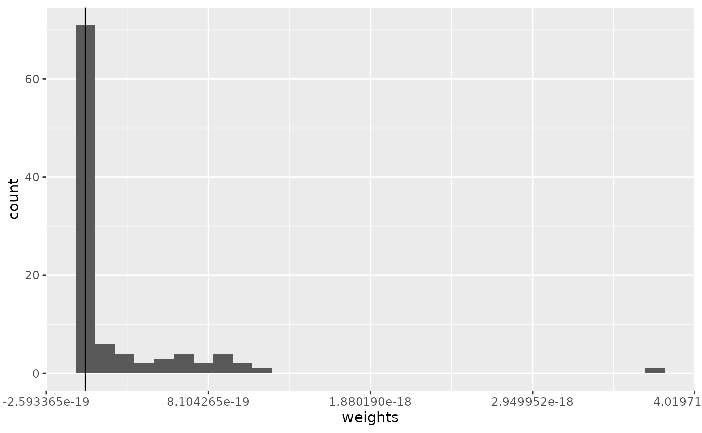
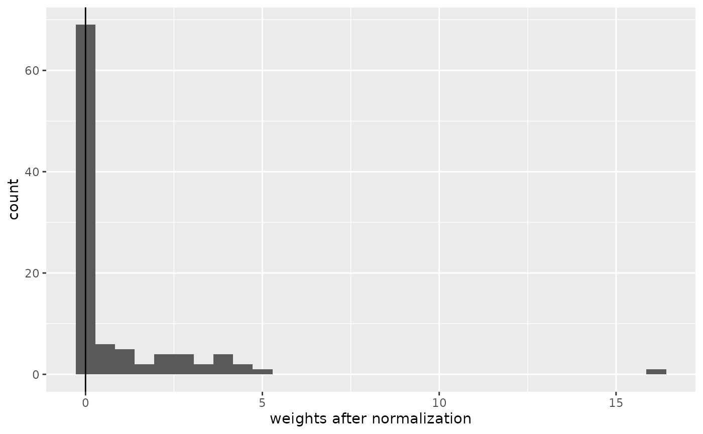

TWCV
twcv.RmdIntroduction
Target-Weighted Cross-Validation (TWCV) was developed by Brenning and Suesse (2026). It uses iterative calibration weighting to align the validation task (predictor values of the training points and nearest-neighbour distances (NNDs) between folds) to the prediction task (predictor values of the prediction points and NNDs between prediction and training points).
The more detailed workflow is:
- Compute CV losses by training a model on the training folds fold and predicting to the held-out fold
- Compute the CV validation task and the prediction task (NNDs and predictor values)
- Calculate quantiles of the balancing variables for training and prediction points separately (NNDs and predictors)
- Calculate the proportion of training points and prediction points falling in each quantile
- Applies iterative proportional fitting (“raking”) to align the
proportions of the training points to those in the prediction points:
- For each balancing variable, calculate the current number of training points in each quantile.
- Calculate the target number of training points in each quantile based on the target proportions.
- Calculate multiplicative adjustment factors that transform the current counts to the target counts.
- Because the weighting is done for each variable seperately (“marginal”), correcting one variable can disturb variables adjusted earlier.
- Repeat this process until the maximum relative change in weights between successive iterations falls below a threshold.
- Normalize weights and shrink them towards 1 to mitigate extreme values.
Setup
library(PDAV)
library(dplyr)
#>
#> Attaching package: 'dplyr'
#> The following objects are masked from 'package:stats':
#>
#> filter, lag
#> The following objects are masked from 'package:base':
#>
#> intersect, setdiff, setequal, union
library(caret)
#> Loading required package: ggplot2
#> Loading required package: lattice
library(terra)
#> terra 1.9.27
library(sf)
#> Linking to GEOS 3.12.1, GDAL 3.8.4, PROJ 9.4.0; sf_use_s2() is TRUE
library(simsam)
library(ggplot2)
library(cowplot)
library(tidyterra)
#>
#> Attaching package: 'tidyterra'
#> The following object is masked from 'package:stats':
#>
#> filter
library(ggnewscale)
set.seed(10)Simulate predictors and response
r <- PDAV:::generate_rast()
predictor_stack <- r[[setdiff(names(r), "outcome")]]
cate_rasters <- which(names(r) %in% c("forest", "grass"))
n_sample <- 100
sampling_r <- r
sampling_r[sampling_r$elev > 60] <- NA
samples <- sam_field(
x = sampling_r,
size = n_sample,
method = sample_clustered(nclusters = 10, radius = 60, na.rm = TRUE)
)
predictor_vars <- names(predictor_stack)
env_vars <- predictor_vars
task_vars <- env_vars
response <- "outcome"
pred_points <- spatSample(predictor_stack, 1000, method = "regular", na.rm = TRUE, as.points = TRUE) |>
st_as_sf()
sample_coords <- st_coordinates(samples) |> as.data.frame() |> rename("x" = X, "y" = Y)
grid_coords <- st_coordinates(pred_points) |> as.data.frame() |> rename("x" = X, "y" = Y)
sample_dat <- st_drop_geometry(samples) |>
mutate(id = row_number()) |>
cbind(sample_coords)
grid_dat <- st_drop_geometry(pred_points) |>
mutate(id = row_number()) |>
cbind(grid_coords)
twcv_specs <- PDAV:::make_twcv_specs(
predictor_vars = predictor_vars,
include_distance = TRUE,
balance_by = 0.2,
shrink_lambda = 0.2,
name = "twcv_extended"
)
fit_fun <- function(train_dat, model, response, predictor_vars = NULL, ...) {
if (is.null(predictor_vars)) {
predictor_vars <- setdiff(names(train_dat), response)
}
dat <- train_dat[, c(response, predictor_vars), drop = FALSE]
ranger::ranger(
formula = stats::reformulate(predictor_vars, response = response),
data = dat,
...
)
}
predict_fun <- function(fit, newdata, ...) {
predict(fit, data = newdata)$predictions
}
model = "rf"
folds <- sample(rep(1:5, length.out = n_sample))
Figure 1: The training points and one predictor (elevation)
Run TWCV
1. Compute CV losses
Iterate over each fold and calculate the predictions and the resulting pointwise CV error:
pred <- PDAV:::compute_cv_predictions(
sample_dat = sample_dat,
folds = folds,
model = model,
response = response,
fit_fun = fit_fun,
predict_fun = predict_fun
)
pe <- PDAV:::compute_pointwise_errors(
obs = sample_dat[[response]],
pred = pred
)
cv_losses <- data.frame(
id = sample_dat$id,
fold = folds,
obs = pe$obs,
pred = pe$pred,
error = pe$error,
se = pe$se,
ae = pe$ae
)
knitr::kable(head(cv_losses))| id | fold | obs | pred | error | se | ae |
|---|---|---|---|---|---|---|
| 1 | 5 | 44.28207 | 43.82087 | 0.4611929 | 0.2126989 | 0.4611929 |
| 2 | 2 | 44.17117 | 49.99404 | -5.8228636 | 33.9057405 | 5.8228636 |
| 3 | 3 | 53.25563 | 53.99884 | -0.7432053 | 0.5523542 | 0.7432053 |
| 4 | 2 | 42.51499 | 46.98822 | -4.4732310 | 20.0097955 | 4.4732310 |
| 5 | 2 | 53.21769 | 49.30701 | 3.9106775 | 15.2933984 | 3.9106775 |
| 6 | 2 | 53.90230 | 46.42331 | 7.4789830 | 55.9351869 | 7.4789830 |
2. Compute the CV validation task and the prediction task
d_sample <- PDAV:::nearest_neighbor_distance(
query_coords = sample_dat[, c("x", "y")],
ref_coords = sample_dat[, c("x", "y")],
exclude_self = TRUE
)
d_grid <- PDAV:::nearest_neighbor_distance(
query_coords = grid_dat[, c("x", "y")],
ref_coords = sample_dat[, c("x", "y")],
exclude_self = FALSE
)
sample_tasks <- data.frame(
id = sample_dat$id,
d = d_sample,
stringsAsFactors = FALSE
)
grid_tasks <- data.frame(
id = grid_dat$id,
d = d_grid,
stringsAsFactors = FALSE
)
for (v in env_vars) {
sample_tasks[[v]] <- sample_dat[[v]]
grid_tasks[[v]] <- grid_dat[[v]]
}
tasks <- list(
sample_tasks = sample_tasks,
grid_tasks = grid_tasks
)
sample_desc <- tasks$sample_tasks
idx <- match(cv_losses$id, sample_desc$id)
# combine CV losses with task descriptors for training points
out <- cv_losses
for (v in task_vars) {
if (!(v %in% names(sample_desc))) {
stop("Variable '", v, "' missing in sample_tasks.", call. = FALSE)
}
out[[v]] <- sample_desc[[v]][idx]
}
# Calculates the NND between folds based on distance matrix / matrices
d_realized <- PDAV:::compute_cv_prediction_distances(
sample_dat = sample_dat,
folds = cv_losses$fold
)
# Update the NND attached to the training points from NND between points to NND between folds
idx_d <- match(out$id, sample_dat$id)
out$d <- d_realized[idx_d]
aug <- list(
losses = out,
grid_tasks = tasks$grid_tasks
)
knitr::kable(head(aug$losses))| id | fold | obs | pred | error | se | ae | temp | moisture | ph | slope | solar | dist_road | prod | elev | forest | grass | d |
|---|---|---|---|---|---|---|---|---|---|---|---|---|---|---|---|---|---|
| 1 | 5 | 44.28207 | 43.82087 | 0.4611929 | 0.2126989 | 0.4611929 | 46.76168 | 33.78805 | 44.62300 | 46.50822 | 50.10956 | 61.96061 | 60.75672 | 45.15465 | 1 | 1 | 14.422205 |
| 2 | 2 | 44.17117 | 49.99404 | -5.8228636 | 33.9057405 | 5.8228636 | 51.25996 | 54.53092 | 50.67009 | 47.29233 | 58.28259 | 52.55031 | 65.24689 | 46.87057 | 1 | 1 | 19.235384 |
| 3 | 3 | 53.25563 | 53.99884 | -0.7432053 | 0.5523542 | 0.7432053 | 38.82998 | 46.77043 | 41.82119 | 56.02720 | 35.20767 | 54.98906 | 59.52938 | 47.50634 | 1 | 1 | 4.123106 |
| 4 | 2 | 42.51499 | 46.98822 | -4.4732310 | 20.0097955 | 4.4732310 | 49.48175 | 34.19502 | 46.44462 | 46.57739 | 49.54025 | 44.47137 | 57.23566 | 38.47061 | 1 | 1 | 16.031219 |
| 5 | 2 | 53.21769 | 49.30701 | 3.9106775 | 15.2933984 | 3.9106775 | 40.43763 | 31.31003 | 47.23048 | 51.68053 | 51.58667 | 61.96604 | 55.45958 | 47.84091 | 1 | 1 | 14.422205 |
| 6 | 2 | 53.90230 | 46.42331 | 7.4789830 | 55.9351869 | 7.4789830 | 46.13120 | 31.85287 | 40.65304 | 49.93170 | 43.47339 | 67.90408 | 49.48730 | 32.93662 | 1 | 0 | 8.246211 |
| id | d | temp | moisture | ph | slope | solar | dist_road | prod | elev | forest | grass |
|---|---|---|---|---|---|---|---|---|---|---|---|
| 1 | 65.30697 | 42.93632 | 66.18163 | 53.24734 | 48.42772 | 34.63536 | 43.43660 | 49.23057 | 12.29096 | 1 | 1 |
| 2 | 62.96825 | 47.40429 | 55.60081 | 51.50022 | 45.05933 | 39.41212 | 36.94975 | 53.64332 | 19.57157 | 1 | 1 |
| 3 | 61.13101 | 47.94994 | 50.36401 | 50.12981 | 46.43496 | 46.35029 | 32.63284 | 58.30790 | 27.51362 | 1 | 1 |
| 4 | 59.84146 | 51.40902 | 38.91773 | 50.01556 | 46.06878 | 50.02884 | 35.30530 | 58.72353 | 32.40647 | 1 | 1 |
| 5 | 58.79626 | 53.17910 | 44.21832 | 43.83926 | 47.86035 | 56.95484 | 30.75681 | 53.42314 | 20.88684 | 1 | 1 |
| 6 | 54.45181 | 55.71695 | 43.72394 | 47.65885 | 50.01531 | 51.39663 | 35.48978 | 55.83273 | 26.59958 | 1 | 1 |
3. Calculate quantiles of the balancing variables
The quantiles are calculated based on the distribution of the values of the predictor variable at the prediction locations, and then applied to the training points.
cv_losses <- aug$losses
grid_tasks <- aug$grid_tasks
unweighted_losses <- list(
unweighted = PDAV:::summarize_losses(cv_losses)
)
sample_tasks_bal <- PDAV:::prepare_for_balancing(
df = cv_losses,
vars = twcv_specs$twcv_extended$balancing_vars,
ref_df = grid_tasks,
by = twcv_specs$twcv_extended$balance_by
)
grid_tasks_bal <- PDAV:::prepare_for_balancing(
df = grid_tasks,
vars = twcv_specs$twcv_extended$balancing_vars,
ref_df = grid_tasks,
by = twcv_specs$twcv_extended$balance_by
)
bal <- list(
sample_tasks_bal = sample_tasks_bal,
grid_tasks_bal = grid_tasks_bal
)
Figure 2: The quintiles of elevation at the prediction points, overlaid by the density of the elevation values at the training points (A) and the prediction points (B).
4. Calculate frequencies for the quantiles
balance_df <- as.data.frame(
lapply(twcv_specs$twcv_extended$balancing_vars, function(v) sample_tasks_bal[[paste0(v, "_cat")]])
)
names(balance_df) <- twcv_specs$twcv_extended$balancing_vars
# Calculates proportion of predpoints in each quantile of each predictor used for weighting
target_margins <- PDAV:::compute_target_margins_generic(
grid_tasks_bal = grid_tasks_bal,
balancing_vars = twcv_specs$twcv_extended$balancing_vars
)
target_margins$elev
#> [1] 0.2001953 0.2001953 0.1992188 0.2001953 0.2001953
# For visualization only: margins of samples
levs <- seq_along(target_margins[["elev"]])
freq_samples <- table(factor(as.integer(balance_df[["elev"]]), levels = levs))
as.numeric(freq_samples) / sum(freq_samples)
#> [1] 0.18 0.32 0.36 0.14 0.005. Apply Raking
In this example, one elevation quintile of the prediction locations is not covered by the training points. However, this does not return an error. Instead, if a quintile is not covered by the training points, the weights shrink towards 0 and the algorithm “converges” A better approach would likely be to stop the algorithm and return an error message hinting towards avoiding this extreme extrapolation. See section 8 and Figure 2.
margin_names <- names(target_margins)
max_iter <- 500
tol = 1e-6
n <- nrow(balance_df)
w <- rep(1, n)
for (iter in seq_len(max_iter)) {
w_old <- w
for (m in margin_names) {
x <- as.integer(balance_df[[m]])
levs <- seq_along(target_margins[[m]])
target_prop <- target_margins[[m]]
# calculate the number of training points currently in each quantile
# uses the weights from the previous balancing variable
# -> already weighted, but likely not ideally for this variable
current_totals <- tapply(w, factor(x, levels = levs), sum)
current_totals[is.na(current_totals)] <- 0
# calculate the desired number of training points in each quantile that matches the target margins:
# Number of training points * target proportion vector
target_totals <- sum(w) * target_prop
adj <- rep(1, length(levs))
ok <- current_totals > 0
# calculates the weight needed to adjust the training point distribution to the target margins
# (weights > 1 are used to up-weigh underrepresented classes, weights < 1 to down-weight over-represented ones)
adj[ok] <- target_totals[ok] / current_totals[ok]
adj[!ok] <- NA_real_
# Checks for all training points if they fall in the distribution of the grid
# However, if one quintile of the prediction domain is not covered by the training data, this does not return an error
# Instead, if a quintile is not covered by the training points, the weights shrink towards 0 and the algorithm "converges"
valid <- !is.na(adj[x])
w[valid] <- w[valid] * adj[x[valid]]
}
# Compute the relative strength of the absolute change of weights from base (or previous) to new weights
rel_change <- max(abs(w - w_old) / pmax(abs(w_old), 1e-12))
# When the changes converge (i.e., when the weight difference from previous iteration to new one is small), stop and return weights
# (when the weights for predictor B are changed, weights for predictor A might be off again, and another iteration starts,
# until the diff between them is small)
if (rel_change < tol) break
}
converged <- iter < max_iter || rel_change < tol
tw <- list(
weights = w,
converged = converged,
iterations = iter
)
ggplot() +
geom_histogram(data = data.frame(weights = tw$weights), aes(x = weights)) +
geom_vline(xintercept = 0)
#> `stat_bin()` using `bins = 30`. Pick better value `binwidth`.
6. Normalize and shrink weights
# Weights are normalized by their mean and shrinked towards 1 to mitigate extreme values
shrink_lambda <- 0
tw$weights_raw <- PDAV:::normalize_weights(tw$weights)
tw$weights <- PDAV:::shrink_weights(tw$weights_raw, lambda = shrink_lambda)
tw$shrink_lambda <- twcv_specs$twcv_extended$shrink_lambda
tw$balancing_vars <- twcv_specs$twcv_extended$balancing_vars
ggplot() +
geom_histogram(data = data.frame(weights = tw$weights), aes(x = weights)) +
xlab("weights after normalization") +
geom_vline(xintercept = 0)
#> `stat_bin()` using `bins = 30`. Pick better value `binwidth`.
7. Return weighted error estimates
est_list <- PDAV:::summarize_losses(cv_losses, tw$weights)
weight_objects <- tw
result <- list(
losses = cv_losses,
estimators = est_list,
weights = weight_objects,
twcv_specs = twcv_specs
)
# Unweighted error:
unweighted_losses
#> $unweighted
#> bias mse rmse mae
#> -0.01230107 37.65568875 6.13642312 4.63613016
# Weighted error:
result$estimators
#> bias mse rmse mae
#> 1.049788 107.893390 10.387174 8.222190True error:
#> [1] 9.1630158. Check if the inputs were supported for raking
Elevation quintile 5 of the prediction points not supported by the training points (if clustering was higher, e.g., radius = 30, then distance would also be not supported). Raking is infeasible in this case, and the prediction domain should be constrained e.g. to the Area of Applicability )(Meyer and Pebesma (2021)). At least, the algorithm should stop with an error message. The normalization of weights by their means creates the illusion that the weights were meaningful and hides this problem.
check_balance_support <- function(balance_df, target_margins, eps = 1e-12) {
out <- lapply(names(target_margins), function(m) {
levs <- seq_along(target_margins[[m]])
sample_counts <- table(
factor(as.integer(balance_df[[m]]), levels = levs)
)
data.frame(
var = m,
level = levs,
sample_n = as.numeric(sample_counts),
target_prop = as.numeric(target_margins[[m]]),
unsupported = as.numeric(sample_counts) == 0 &
as.numeric(target_margins[[m]]) > eps
)
})
dplyr::bind_rows(out)
}
support_check <- check_balance_support(balance_df, target_margins)
support_check |>
dplyr::group_by(var) |>
dplyr::summarise(
target_mass_covered = sum(target_prop[sample_n > 0]),
n_unsupported_bins = sum(unsupported),
.groups = "drop"
)
#> # A tibble: 11 × 3
#> var target_mass_covered n_unsupported_bins
#> <chr> <dbl> <int>
#> 1 d 1 0
#> 2 dist_road 1 0
#> 3 elev 0.800 1
#> 4 forest 1 0
#> 5 grass 1 0
#> 6 moisture 1 0
#> 7 ph 1 0
#> 8 prod 1 0
#> 9 slope 1 0
#> 10 solar 1 0
#> 11 temp 1 0